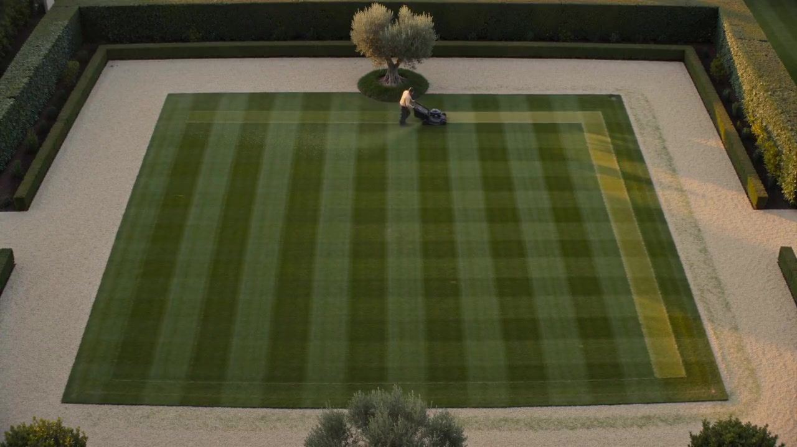

A better
first impression.
Three industries, each with its own character. Made to feel just as considered in your hand. Explore the motion, the details and the little tools inside.
THE STUDIES
01 → 03 / EACH BUILT INDEPENDENTLYAFTER
IMAGE.
A cinematic spray loop, precise typography and a finish finder. Motorsport energy, with a quieter attention to detail.
ENTER THE PITLANE ↗
still
field.
A lawn striped to perfection, warm linen and elegant type. Explore outdoor moods, then find your starting point in the space planner.
STEP OUTSIDE ↗
UPPER
HAND.
Architectural photography, strong type and straight answers. A practical situation selector turns curiosity into a preparation checklist.
SEE THE NEW STANDARD ↗
Same business goal.
Very different first impressions.
These are standalone design studies, not launched client websites or completed work. Branding is fictional, film and photography illustrative and any interactive controls are demos only. Once an art direction works, we can adapt the business's services and conversion paths without losing its character.